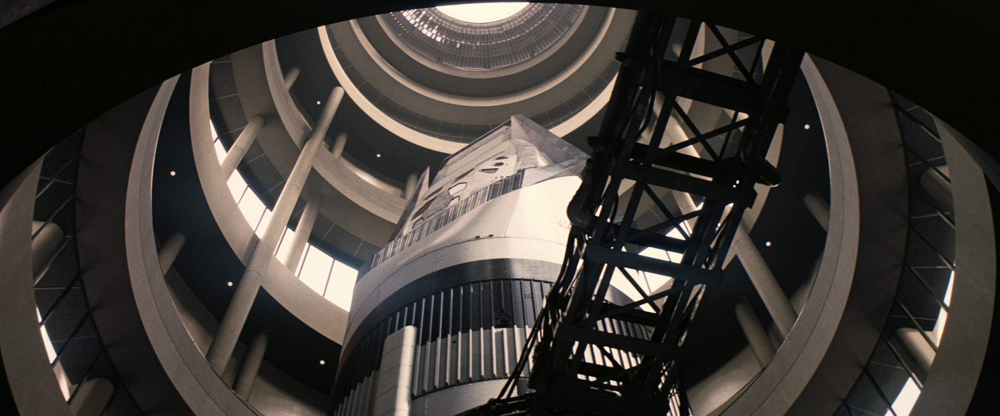
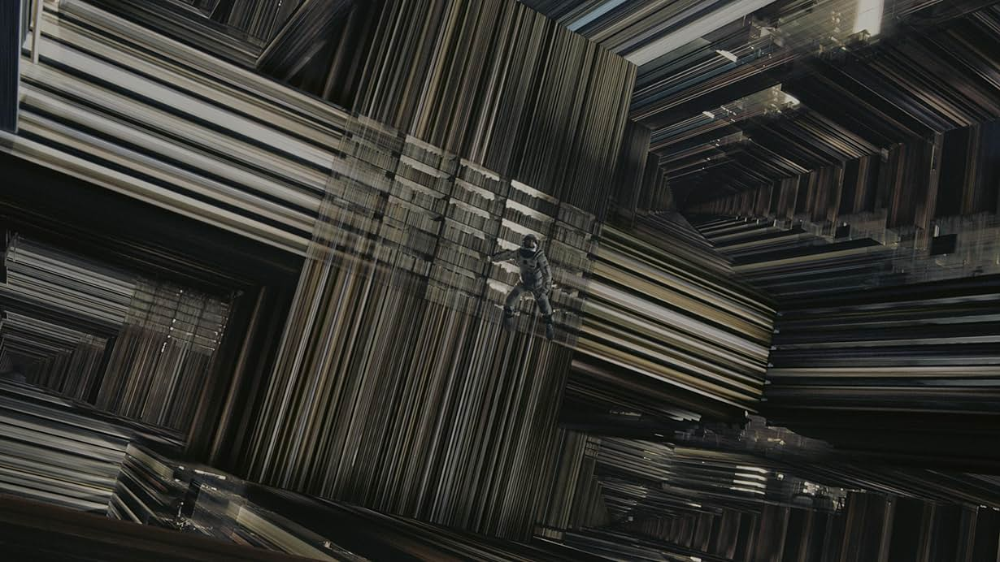
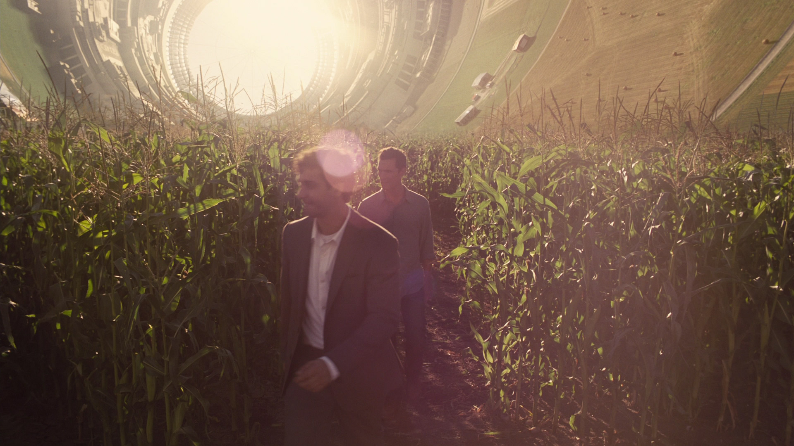

當庫柏加入NASA的太空探險隊伍，準備啟程尋找新的居住星球時，他和女兒墨菲之間的別離成為了一個動人的插曲。墨菲雖然年幼，卻對父親的離開感到難以接受，但同時也理解父親的使命和責任。他們之間的離別成為了庫柏前進的動力，他決心為了女兒和人類的未來做出犧牲。
INTERSTELLAR
關於電影



在不久的未來，地球受到日益嚴重的氣候變化和糧食短缺的困擾，人類文明面臨著前所未有的危機。主角庫柏是一名退役的NASA飛行員，他與他的女兒墨菲之間有著深厚的感情。儘管生活在艱困的環境中，庫柏總是盡力保護和照顧著女兒，他們之間的親情成為了故事的一個重要主題。
在太空探險中，庫柏和他的隊伍面臨著各種危險和挑戰，但他心中始終牽掛著墨菲，她是他前進的動力和希望。庫柏在面對未知世界的同時，也不斷思念著自己的女兒，他的愛和掛念成為了他在宇宙中前行的指引。
最終，當庫柏進入五度空間，以解決地球危機時，他的心中始終充滿了對女兒的愛和思念。他利用五度空間的力量，傳達了重要的信息給墨菲，幫助她和地球的其他科學家找到了解決危機的方法。庫柏的愛和奉獻最終讓他和女兒團聚，並為人類開啟了一個新的未來。

角色介紹

馬修·麥康納
庫柏(Cooper)

潔西卡·雀絲坦
墨菲

安·海瑟薇
艾蜜莉亞·布蘭德

麥特·戴蒙
曼恩博士

米高·肯恩
布蘭德教授
約瑟夫·庫柏(Joseph Cooper)
馬修·麥康納(Matthew McConaughey)飾演，庫柏是一位前太空人和農夫，他被選中參與一項危險的任務，穿越蟲洞尋找新的家園，以拯救人類。庫柏面臨著道德抉擇和與家人的離別，並展現出強大的毅力和智慧。
艾蜜莉亞·布蘭德博士(Dr.Amelia Brand)
安妮·海瑟薇(Anne Hathaway)飾演，她是NASA的一位天文學家和物理學家，在任務中擔任庫柏的同事和合作者。她致力於解決宇宙中的重力問題，以便人類能夠找到適合居住的新星球。
墨菲·庫柏(Murphy Cooper)
傑西卡·查斯坦(Jessica Michelle Chastain)飾演，墨菲是一個聰明而好奇的年輕女孩，對宇宙和科學充滿著熱情。她與父親庫柏之間有著非常親密的關係，當庫柏參與一個秘密的太空任務時，墨菲被迫與父親分離，然而，墨菲並沒有因此而氣餒，她堅信父親會回來，並對解決地球面臨的危機充滿信心。
曼恩博士(Dr.Mann)
麥特·戴蒙(Matt Damon)飾演，曼恩博士曾經參與太空探索的任務，他在某個行星上開展了一個重要的探索任務。然而，隨著劇情的發展他的行為和動機逐漸變得不明朗，引發了劇情的轉折。
布蘭德教授(Professor John Brand)
邁克爾·凱恩(Michael Caine)飾演，布蘭德教授在電影中扮演著關鍵的角色，他是一個堅定的領導者，主導了一個旨在拯救人類的計劃。在整個部電影中，他的計劃和決策受到了質疑和挑戰。他必須在人類存亡的壓力下作出艱難的抉擇，同時面對自己的道德和倫理困境。
獲獎紀錄
第87屆奧斯卡金像獎
最佳視覺效果(獲獎)
最佳藝術指導(提名)
最佳音效剪輯(提名)
最佳音效(提名)
最佳配樂(提名)
第68屆英國電影學院獎
最佳視覺特效(獲獎)
最佳藝術指導(提名)
最佳原創音樂(提名)
最佳攝影(提名)
第41屆土星獎
最佳科幻電影(獲獎)
最佳藝術指導(獲獎)
最佳視覺特效(獲獎)
最佳配樂(獲獎)
最佳寫作(獲獎)